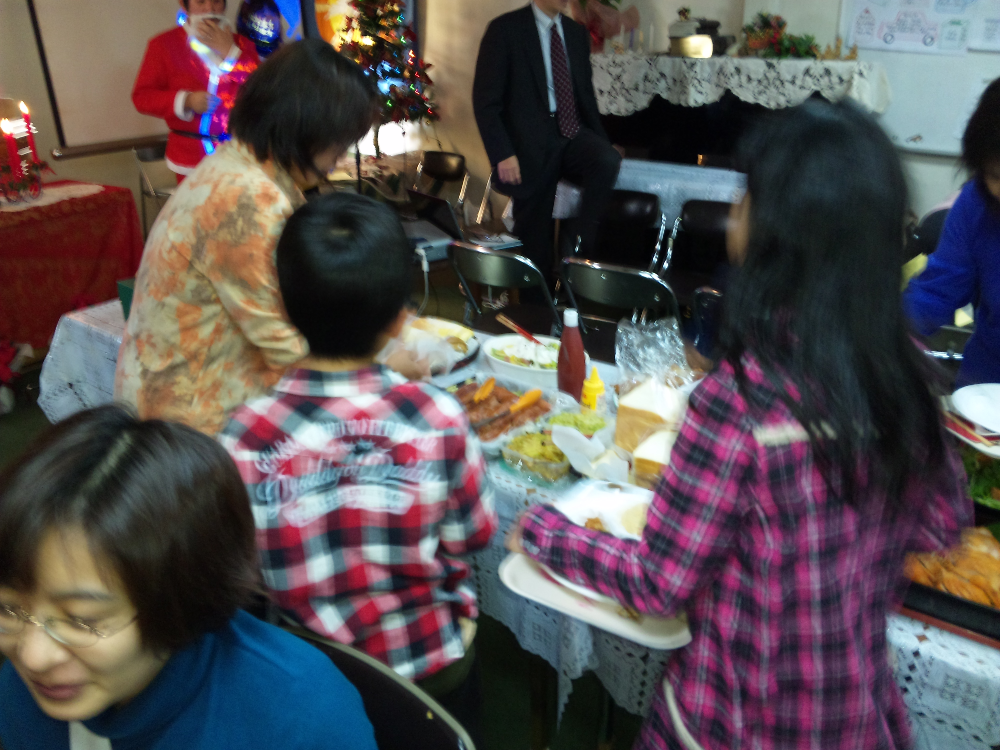
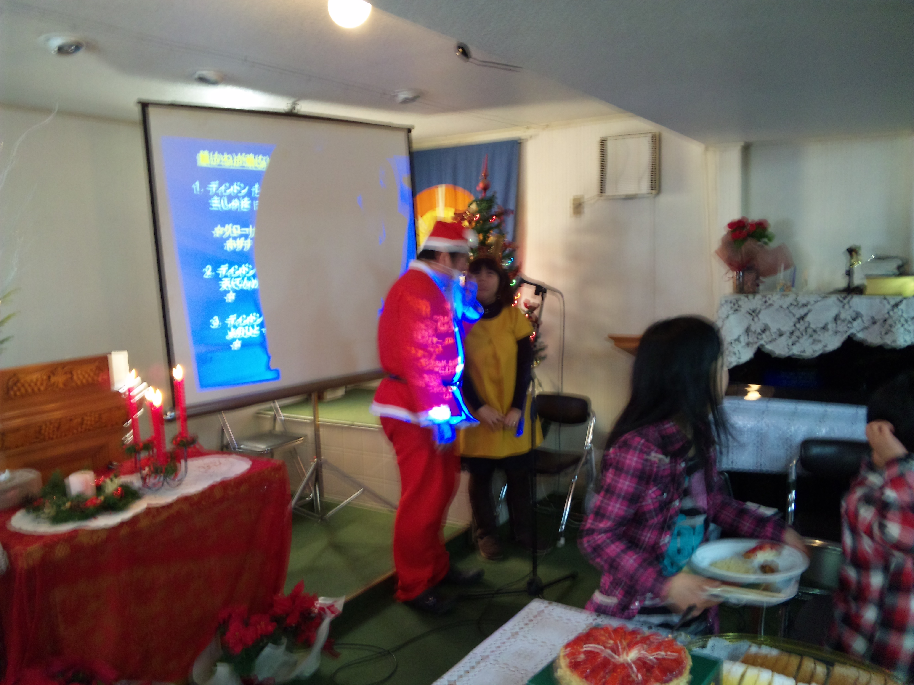
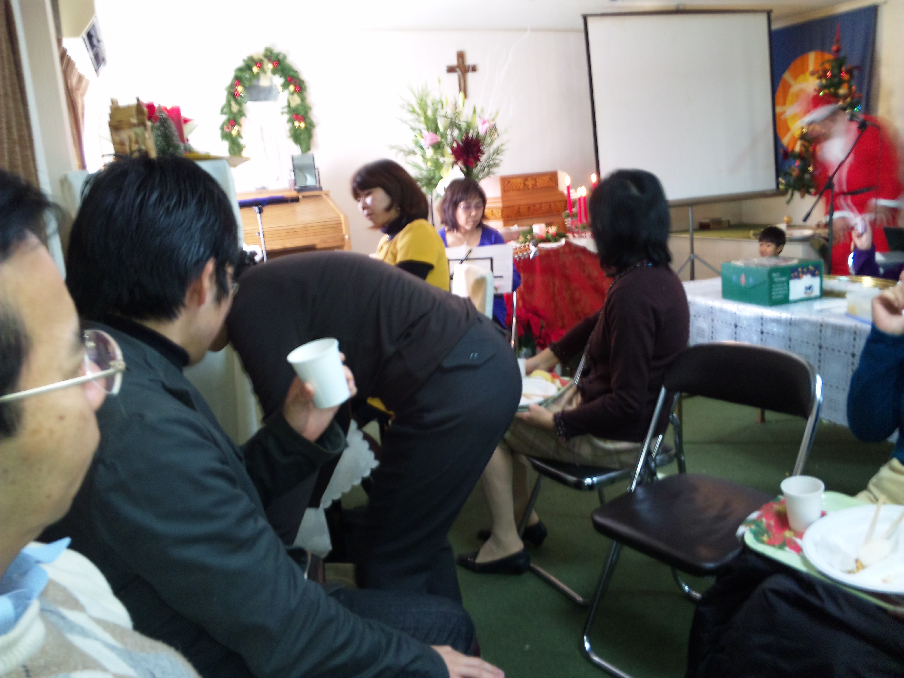
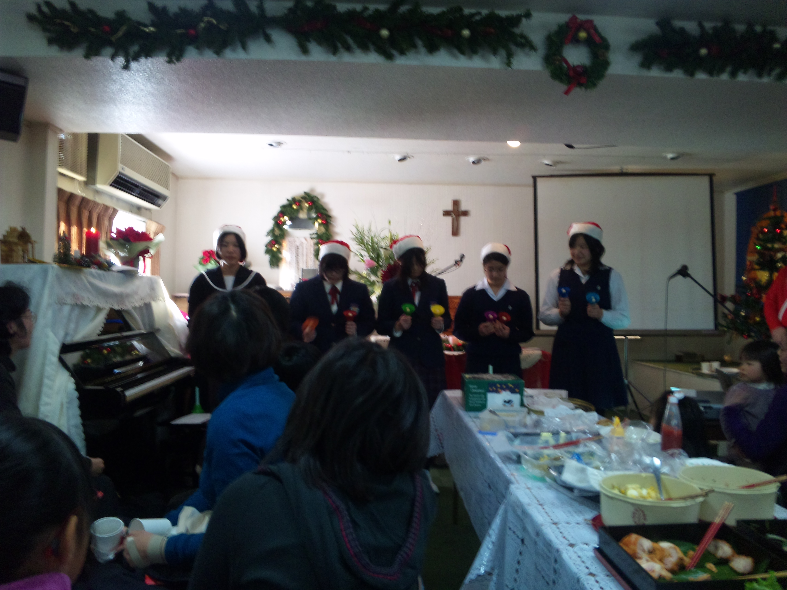
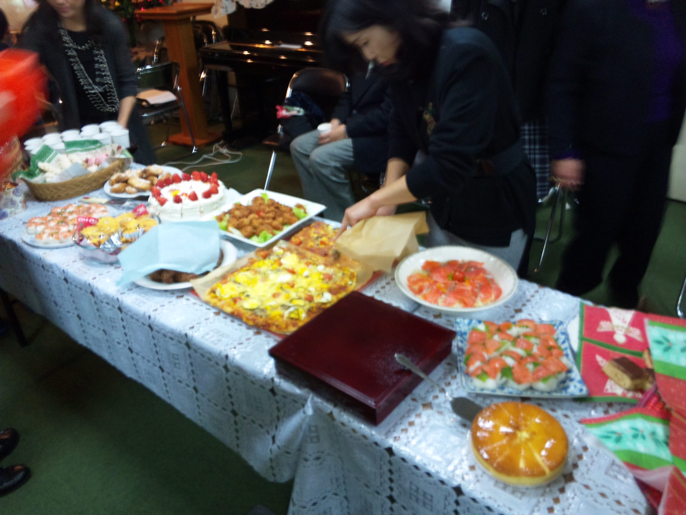
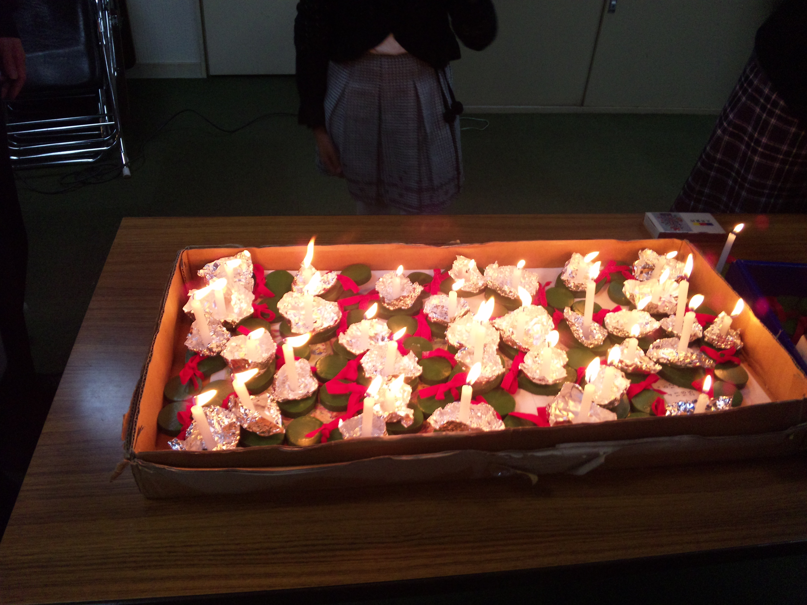

| 日本同盟基督教団 上大岡聖書教会 Kamiooka Bible Church |
クリスマス礼拝等のご案内
◎下記日程にてクリスマス礼拝などを予定しています。どうぞ、おいで下さい。 ・１２月 ３日（金）10:00 サフラン会（婦人会）クリスマス会 ・１２月 ４日（土）10:00 教会学校クリスマス会 ・１２月１９日（日）10:30 クリスマス礼拝 ・１２月２４日（金）19:00 クリスマス･イブ礼拝       ※写真は昨年のクリスマス祝会、イブ礼拝のものです。 「見よ、処女がみごもっている。そして男の子を産む。その名はインマヌエルと呼ばれる。」 ヨセフは眠りからさめ、主の使いに命じられたとおりにして、その妻を迎え入れ、 そして、子どもが生まれるまで彼女を知ることがなく、その子どもの名をイエスとつけた。 マタイの福音書 1:23～25 |
| 日本同盟基督教団 上大岡聖書教会 主任牧師：徳梅陽介 伝道師：鈴木大輝 〒234-0052 横浜市港南区笹下 7-13-2 ℡ 045-845-4536 |